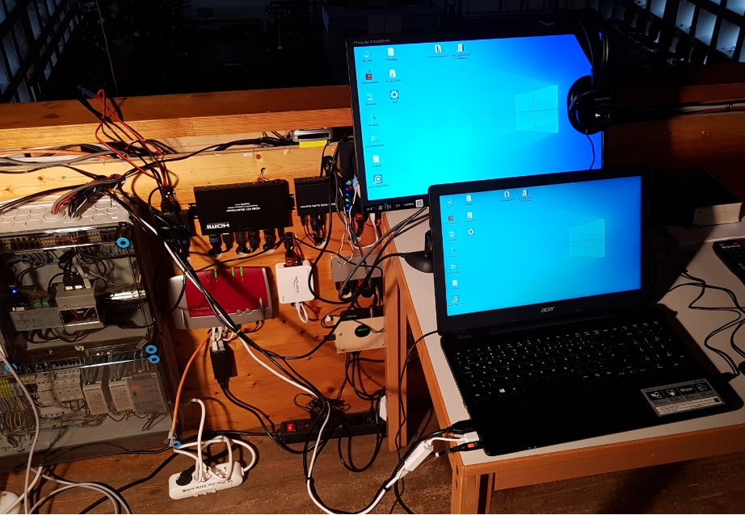

Technische Dokumentation / C auf Raspberry Pi
RasPiAutomation
Vom Kommando zum Hardwaresignal. Komponenten, Aufrufketten und Betriebswissen fuer Techniker, die in die Steuerungssoftware einsteigen.
Technische Dokumentation / C auf Raspberry Pi
Vom Kommando zum Hardwaresignal. Komponenten, Aufrufketten und Betriebswissen fuer Techniker, die in die Steuerungssoftware einsteigen.
RasPiAutomation ist die hardware-nahe Seite der JoKiAutomation-Anlage: ein Linux-Kommandozeilenprogramm fuer Audio und fernbedienbare Geraete. Kamerapositionierung ueber Relais und der Servozoom gehoeren ausschliesslich zum Legacy-Modus, der nicht mehr genutzt wird. Die Anlage laeuft auf einem Raspberry Pi mit Debian 64-Bit und RT-Patch. Die Buildkette erzeugt dafuer ein AArch64-Linux-Programm.
Die externe Windows-Anwendung kann das Programm per SSH starten. Die C-Anwendung selbst nimmt zwei numerische Argumente entgegen. Sie ist weder ein dauerhaft laufender Netzwerkserver noch die Implementierung der Windows-Oberflaeche.
Ein Aufruf fuehrt einen Steuerungsablauf aus und liefert einen Prozessstatus zurueck. Dabei werden Profile geladen, elektrische Signale ausgegeben und Mixerwerte zur Kontrolle zurueckgelesen. Positionsdaten und Winkelsensoren betreffen den nicht mehr genutzten Legacy-Pfad.

UART → RS232/USB → Audiomixer
Rueckweg: Kanalwerte und Verifikation
Nicht mehr genutzt.
Historischer Pfad: GPIO → Relais / Servo → Kamera; Rueckweg ueber I²C-Winkelsensoren.
GPIO → IR-Sender → HDMI / Beamer / Recorder
Lernen: IR-Empfaenger → GPIO-Eingang
Die Software schaltet Geraete und Quellen. Das eigentliche Audio-/HDMI-Nutzsignal fliesst durch die angeschlossenen Geraete, nicht als Stream durch dieses C-Programm. Ein erfolgreich gesendeter IR-Befehl beweist deshalb nicht, dass das Zielgeraet umgeschaltet hat.
only_one_instance() legt eine benutzerbezogene Lockdatei an und sperrt sie mit fcntl(F_SETLK). Bei einer schon laufenden Instanz beendet sich der neue Prozess mit Status 1.main() akzeptiert nur argc == 3: Programmname, Kommandonummer und Index.SYSTEM_Initialize() initialisiert pigpio, registriert dessen Cleanup und versucht SCHED_FIFO mit Prioritaet 99 zu aktivieren.initSystemTimer() startet die Zeitbasis; die konfigurierte IP wird ausgegeben. Das ist kein Aufbau einer Netzwerkverbindung.ACinit() laedt Audioprofile. Danach dispatcht CIexecuteCommand(argv) den eigentlichen Auftrag.atexit()-Funktionen geben Instanzschutz und pigpio frei.ACinit();
result = CIexecuteCommand(argv);return result;Die Sperre ist benutzerbezogen, nicht systemweit fuer alle Benutzer. Die Module verwenden globale Zustandsdaten; der normale Kontrollfluss ist synchron und blockierend. Die mikrosekundenbasierten Timer und die angeforderte Scheduler-Prioritaet sind keine Garantie fuer harte Echtzeit. Der Rueckgabewert von ACinit() wird in main() derzeit nicht ausgewertet.
Die Lockdatei liegt bevorzugt unter XDG_RUNTIME_DIR, sonst HOME, sonst /tmp. Der Name enthaelt die Benutzer-ID. Ein fehlgeschlagener Instanzschutz oder eine fehlgeschlagene Systeminitialisierung beendet den Ablauf vor dem Dispatcher.
Die Tabelle trennt aktive Steuerungsmodule von mitgefuehrten Hilfs- und Altkomponenten. Dass eine Datei mitgebaut wird, bedeutet nicht automatisch, dass der normale CLI-Pfad sie aufruft.
| Komponente / Quellen | Aufgabe und zentrale Funktionen | Abhaengigkeiten / Status |
|---|---|---|
| main.c | Programmeinstieg; Argumentanzahl, Instanzschutz, Initialisierung und Exitcode. | System, Timer, Audio-Initialisierung, Dispatcher. |
| ComInt.c / ComInt.h | CIexecuteCommand() verteilt CLI-Kommandos; CIsequencer() kombiniert Audio und IR zu Anlagenablaeufen. Speichert Beamer-Togglezustand. | Audio und IR; zusaetzlich erhaltene Legacy-Aufrufpfade fuer Position und Zoom. |
| AudioControl.c / AudioControl.h | Profil laden, vier Kanalwerte lesen, Fade ausfuehren, Profil verifizieren, Teach und Logrotation. AC_Execute() ist der Kommandoeinstieg. | POSIX-UART, termios, Dateisperre, Timer, binaere Profile. |
| AudioCommands.h | Beschreibbare Protokollvorlagen wie (MX?:VOL1) und (MX*:S:xxxx:63). | Definitionen stehen im Header; im aktuellen Audio-Treiber verwendet. Nicht ungeprueft in weitere Translation Units einbinden. |
| AudioControlValidation.c / .h | Reine Funktionen fuer Antwortformat, Kanalzuordnung, exakten Profilvergleich und Retry-Entscheidung. | Kein Hardwarezugriff; nativ testbar. |
| AudioControlWrite.c / .h | AC_WriteAllWith() verarbeitet partielle Writes, EINTR, Null-Write und Fehler; Writer ist injizierbar. | Kein fest verdrahteter UART-Zugriff; nativ testbar. |
| PositionControl.c / .h | Legacy, nicht mehr genutzt. PC_Init(), PC_Move(), PC_Teach(), PC_MoveButton(), PC_Sequencer(). Koordiniert Winkel, Relais und Zoom. | PositionDirect, ZoomControl, IR, Audio, Timer und HAL. |
| PositionDirect.c / .h | Legacy, nicht mehr genutzt. AS5048B-Sensorzugriff; I²C-Register, Drehrichtung, Winkelumrechnung und Filter-/Mittelungsfunktionen. | Zwei Sensoren, Gier 0x41 und Nick 0x40. |
| ZoomControl.c / .h | Legacy, nicht mehr genutzt. Zeitgesteuerter Zoomservo; Konfiguration, Kalibrierung und Positionswerte. Zustandsautomat ZoomControl_Task(). | SYSTEM_PWM() / pigpio-Servopulse; keine eigene Zoom-Winkelrueckmeldung in diesem Modul. |
| IRcontrol.c / .h | IR-Flanken und Zeiten lernen, speichern und als 38-kHz-Traegerfolge wiedergeben. | GPIO, Timer, gespeicherte Sequenzen. Kein Geraete-ACK im Sendepfad. |
| system.c / .h | Gemeinsame Systeminitialisierung, Scheduler, Buildkonfiguration, Zahlenbereichsabbildung SYSTEM_map(), Servo-Bruecke SYSTEM_PWM(). | pigpio-Adapter und generierter Konfigurationsheader. |
| pigpio_adapter.c / .h | Lokale Hardwareabstraktion: dynamisches Laden der pigpio-Direct-API, Legacy-Pinmapping, GPIO/I²C/Servo und Fehlertexte. | libpigpio.so.1 oder libpigpio.so; direkte lokale API, nicht pigpiod-Client. |
| timer.c / .h | Startzeit, Zeitdifferenz, Ablaufpruefung und blockierendes wait() mit Mikrosekundenwerten. | gettimeofday(); aktive gemeinsame Zeitbasis. |
| cssl.c / .h | Mitgefuehrte Serialbibliothek mit Callback-/Signal- und Blocking-Schnittstelle. | Kein Aufruf aus dem regulaeren Audio-/CLI-Steuerpfad gefunden. AudioControl nutzt eigene POSIX-I/O. |
| hw.c / .h | Mitgefuehrte Registerbibliothek fuer direkten Peripheralzugriff, raspi_map_hw() ueber /dev/mem. | Kein Aufruf von raspi_map_hw() aus dem normalen CLI-Pfad gefunden; nicht mit dem aktiven pigpio-Adapter verwechseln. |
| TestProg.c / .h | Hardware-Diagnose: GPIO-Zeitversatz messen und maximalen Offset speichern; TP_Test() enthaelt eine Endlosschleife. | Kein Dispatcher-Aufruf fuer TP_Test() gefunden. Kein hardwarefreier Unit-Test. |
| tests/audio_control_validation_test.c | Native Tests fuer Audio-Parser, Profilvergleich, Retry-Entscheidungen und Write-All-Grenzfaelle. | Separater CMake-Testmodus; prueft nicht das gesamte UART-/Mixer-System. |
./RasPiAutomation <command> <index>
./RasPiAutomation 30 113 # Gottesdienst: 0x70 + 1
./RasPiAutomation 30 114 # Predigt: 0x70 + 2
./RasPiAutomation 40 2 # nur Legacy: Kameraposition 2 (nicht mehr genutzt)
./RasPiAutomation 50 4 # Anlagen-Sequenz: GoPro-Ansicht
./RasPiAutomation 60 2 # nur Legacy: Zoomwert 2 (nicht mehr genutzt)Die Werte werden mit atoi() gelesen. Daher dezimale Argumente verwenden: 114, nicht 0x72. Viele Indizes werden beim Dispatch auf unsigned char gekuerzt; ungueltige Eingaben deshalb nicht als sichere Validierungstests an der Anlage verwenden.
| Kommando | Symbol | Index / Ziel |
|---|---|---|
| 10 / 11 | CI_IR / CI_IR_TEACH | IR-Sequenz senden / lernen; Sequenz-ID. |
| 30 / 31 | CI_AUDIO_SWITCH / CI_AUDIO_TEACH | Audio-Befehlsbyte / gepackte Teach-Daten. |
| 40 / 41 | CI_POS_CONTROL / CI_POS_TEACH | Gespeicherte Kameraposition anfahren / einlernen. |
| 43 | CI_POS_MOVE_BTN | 1 auf, 2 ab, 3 links, 4 rechts, 5 losgelassen/stoppen. |
| 44 | CI_POS_TEST | 0: Positionstest; sonst PC_Test(). Bewegende Hardwaretests. |
| 50 | CI_SEQUENCE | Anlagen-Sequenz-ID aus ComInt.h, nicht Audioprofil-ID. |
| 52 | CI_POS_SEQUENCE | Legacy, nicht mehr genutzt: Seamless-Switch fuer Kamerapositionen; gepackter Index fuer Audio + Zwischenansicht + Position. |
| 60 / 61 / 62 / 63 | Zoom-Kommandos | Position / Kalibrierung / Positionstest / direkte Servostellung. |
| 20 / 21 | CI_CAMERA / CI_CAMERA_TEACH | Im Header definiert, aber kein entsprechender Case im aktuellen CIexecuteCommand(). Nicht als implementierte CLI-Funktion annehmen. |
int command = atoi(&argv[1][0]);
int index = atoi(&argv[2][0]);case CI_AUDIO_SWITCH: // audio switch command
result = AC_Execute((unsigned char)index);
break;CIsequencer() kombiniert Audio und gelernte IR-Befehle. Hauefige IDs: 1 Pause, 2 Timer, 3 PPP/Band, 4 GoPro/Gottesdienst, 5 Positionskamera/Gottesdienst, 6 Predigerkamera/Predigt, 7 Gebet, 8 Leser, 9 Lied, 11 Reset, 12 Live-Video, 13 Beamer-Toggle und 20 Textansicht. Weitere IDs steuern Beamer und Backup-Recorder; die vollstaendige Definition steht in ComInt.h.
Sequenzen sind keine unverbindlichen Vorschauen. Sie koennen Geraete schalten, Motoren starten, Daten schreiben oder den Raspberry Pi herunterfahren. Teach-, Kalibrier- und Testkommandos nur an einer freigegebenen Anlage ausfuehren.
Die relaisbasierte Kamerapositionierung, die AS5048B-Winkelerfassung und der Servozoom gehoeren zur frueheren Anlage. Dieses Kapitel dokumentiert den erhaltenen Quellcode, nicht den aktuellen Betriebsablauf. Die Kommandos 40/41/43/44, 52 und 60..63 sind hier als Legacy-Schnittstellen zu verstehen, nicht als Bedienempfehlung fuer den aktuellen Betrieb.
Der Dispatcher initialisiert IR, schaltet mit IR_SequenceOut(2) auf die Positionskamera, initialisiert Position und Zoom und ruft bei Erfolg PC_Move(index) auf. Dieser direkte Pfad fordert kein Audioprofil an.
RPI_Write → Relais → Nick/Gier-Motor
AS5048B → I²C → PositionDirect → angleData
ZoomControl_Task → SYSTEM_PWM → Servo
PC_Init() laedt 22 Positionseintraege. Eintrag 21 liefert den Gier-Nullpunkt. PC_calc_Angles() liest beide Sensoren und rechnet die Gier relativ zu diesem Offset; negative Gierwinkel werden in den Bereich um 360 Grad korrigiert.
angleData.gier = PosDirect_angleR(&PosDir_Gier, U_DEG, 1) - angleData.gierOffset;
angleData.nick = PosDirect_angleR(&PosDir_Nick, U_DEG, 1);
if(angleData.gier < 0)
{
angleData.gier += 360;
}Vor einer automatischen Bewegung sperrt PC_Move() die lokale Fernbedienung. Aus einer Abweichung von mehr als 0,5 Grad werden Richtungsausgaenge abgeleitet. Fuer Gier gibt es zusaetzliche Zielbereichsbedingungen. Die Schleife liest fortlaufend Winkel, prueft das Erreichen des Ziels und bearbeitet den Zoom-Zustandsautomaten; sie ist auf 60 Sekunden begrenzt. Die konkrete Relaispolaritaet ist aus dem Code beziehungsweise dem Schaltplan abzuleiten, nicht aus dem Namen eines Pins.
Wenn RASPI_CONFIG_PTZ_CAM_ENABLED != 0, kehrt PC_Move() unmittelbar erfolgreich zurueck. Das bedeutet nicht, dass diese Funktion dann eine Netzwerkkamera bewegt; der Legacy-Relaisbewegungspfad wird uebersprungen.
Dieser Ablauf wird ebenfalls nicht mehr genutzt. Der historische Seamless-Switch zeigt waehrend der Kamerafahrt eine andere Quelle und schaltet danach auf die Positionskamera zurueck. Er gehoert zur Legacy-Kamerapositionierung, nicht zum aktuellen Betriebsablauf. Die allgemeine IR-Geraetesteuerung ist davon zu unterscheiden.
PC_Sequencer() zerlegt den numerischen Index: Bits 0..7 enthalten die Position, Bits 8..11 die IR-Zwischenansicht und Bits 12..15 das Audioprofil. Die historische Reihenfolge ist Audio verifizieren → Zwischenansicht → Kamera bewegen → Positionskamera zurueckschalten. Scheitert Audio, wird die nachfolgende Bewegung in diesem Sequenzer nicht gestartet.
unsigned char position = (unsigned char)(ID & 0xff);
unsigned char camView = (unsigned char )((ID >> 8) & 0x0f);
unsigned char audio = (unsigned char )((ID >> 12) & 0x0f);result = AC_Execute((unsigned char)AUDIO_PROFILE + audio );if(result == PC_SUCCESS)
{
result = IR_SequenceOut(camView);
}
if(result == PC_SUCCESS)
{
result = PC_Move(position);
}
if((result == PC_SUCCESS)&&(camView != 2))
{
result = IR_SequenceOut(2);
}Historisches Legacy-Beispiel, keine aktuelle Bedienempfehlung: 0x2202 bedeutet Profil 2, Zwischenansicht 2, Position 2. Fuer die CLI dezimal: ./RasPiAutomation 52 8706. Die Positions-ID ist ein Dateieintrag und darf nicht allein aus einer Ortsbezeichnung abgeleitet werden.
ZoomControl_init() laedt Servokonfiguration und Zoomwerte. Der Zustandsautomat verwendet AZ_TASK_INITIALIZE (10), AZ_TASK_MOVE (20) und AZ_TASK_IDLE (0). Die Servostellungen unterscheiden Mitte, Referenzfahrt und Steuerfahrt in beide Richtungen; gespeicherte Zoomwerte und Kalibrierzeit bestimmen den Bewegungsablauf. Die PWM-Ausgabe laeuft ueber SYSTEM_PWM() zu RPI_ServoPulse(). Die Konstante AZ_SERVO_PERIOD ist 20.000 Mikrosekunden; die Systembruecke uebergibt den Pulswert an pigpio und verwendet ihren breakTime-Parameter nicht.
Manuelle Richtungstasten verwenden dagegen PC_MoveButton(). Ein Druck setzt Richtungsrelais, PC_BUTTON_RELEASED stoppt alle vier Bewegungsrelais und gibt die Fernbedienung frei. Die Freigabe ist ein eigener Steuerungsaufruf und darf nicht vergessen werden.
Der Dispatcher gibt bei Kommando 30 das Befehlsbyte an AC_Execute() weiter. Das obere Nibble bestimmt die Operation; AUDIO_PROFILE == 0x70. Das untere Nibble ist beim Profilaufruf die Profilnummer.
| Profil | Bedeutung | CLI-Index fuer Kommando 30 |
|---|---|---|
| 0 | Diashow | 112 / 0x70 |
| 1 | Gottesdienst | 113 / 0x71 |
| 2 | Predigt | 114 / 0x72 |
| 3 | Text | 115 / 0x73 |
| 4 | Band | 116 / 0x74 |
| 5 | Videoclip | 117 / 0x75 |
AC_open() oeffnet /dev/ttyUSB0, sperrt den Port mit flock() und konfiguriert 9600 Baud, acht Datenbits, keine Paritaet, zwei Stoppbits (CSTOPB).AC_Request() uebernimmt vier gespeicherte Sollwerte aus aC_Data.audioProfiles in volumeRequest.AC_GetVolume() liest alle vier Kanaele. Jede Abfrage leert vorher ausschliesslich den UART-Eingang, sendet ihr Kanal-Kommando und wartet 30 ms.AC_ParseVolumeResponse() verlangt exakt (VOLn:dd): neun Bytes, richtiger Kanal, zwei Dezimalziffern, Wert 0..63 und schliessende Klammer. Ungueltige Antworten werden nicht als Kanalwert uebernommen. Hoechstens zwei Versuche je Kanal; echte TX-/RX-Fehler brechen ab.volumeSteps wird aus den gelesenen Werten initialisiert. AC_Control() bewegt nur abweichende Kanaele schrittweise und wartet nach jedem gesendeten Kanalschritt 30 ms. Das ist nicht pauschal 30 ms fuer alle vier Kanaele zusammen.-1 gesetzt.int matched = AC_ProfileValuesMatch(requested, actual);
AC_ProfileDecision decision = AC_GetProfileDecision(AC_SUCCESS, matched, attempt);
AC_Log("AC_PROFILE_VERIFY pid=%d profile=%u attempt=%d requested=%s actual=%s match=%d result=%u",
getpid(), index, attempt, requestedText, actualText, matched,
decision == AC_PROFILE_DECISION_FAIL ? AC_PROFILE_VERIFY_FAILED : AC_SUCCESS);AudioCommands.h liefert mutable Vorlagen. Eine Leseabfrage ist (MX?:VOL2); die erwartete Antwort lautet etwa (VOL2:50). Fuer eine Lautstaerkeaenderung werden Kanalzeichen und zweistelliger Wert in (MX*:S:xxxx:63) ersetzt.
AC_write() ruft den Write-All-Helfer mit der System-Write-Funktion auf. Erfolg bedeutet, dass alle angeforderten Bytes uebergeben wurden. Das ist noch kein Beweis fuer den Mixerzustand; diesen liefert erst die anschliessende Verifikation. Die uebergebenen Laengen stammen im Bestand vielfach aus sizeof(array) und enthalten damit auch das abschliessende Nullbyte.
while (*written < length)
{
ptrdiff_t bytesWritten = writeFunction(fd, buffer + *written, length - *written);
if (bytesWritten > 0 && (size_t)bytesWritten <= length - *written)
{
*written += (size_t)bytesWritten;
continue;
}
if (bytesWritten < 0 && errno == EINTR)
{
continue;
}
*errorNumber = bytesWritten == 0 || bytesWritten > 0 ? EIO : errno;
return AC_TX_FAILED;
}COMMAND pid=6481 command=30 index=114
AC_PROFILE_READ_AFTER pid=6481 profile=2 attempt=1 requested=0,50,0,31 actual=0,50,0,31 result=0
AC_PROFILE_VERIFY pid=6481 profile=2 attempt=1 requested=0,50,0,31 actual=0,50,0,31 match=1 result=0
AC_PROFILE_SUCCESS pid=6481 profile=2 attempt=1 requested=0,50,0,31 actual=0,50,0,31 result=0AC_WRITE_OK belegt Byteuebergabe. AC_VOLUME_RESPONSE_OK belegt eine gueltige Kanalantwort. AC_PROFILE_WRITE_END actual=unverified ist absichtlich kein bestaetigter Istwert. Erst AC_PROFILE_VERIFY match=1 und AC_PROFILE_SUCCESS bestaetigen den gelesenen Endzustand.
Bezeichnungen wie GP oder KP werden ausserhalb dieses C-Dispatchers in numerische Befehle umgesetzt. Im beschriebenen JoKiAutomation-Mapping steht das zweite Zeichen fuer Audio: D/G/P/T/B. GG ist damit Gottesdienst, nicht Predigt. Den exakten externen Mapping-Code enthaelt dieses Repository nicht.
Ein IR-Empfaenger liefert Flanken an IR_IN. IR_SequenceIn() misst Signalzustaende und ihre Dauer, legt diese in IR_sequences ab und persistiert die Sequenzen. Die Konstanten begrenzen den Teach-Warteablauf auf neun Sekunden; eine Pause von 60 ms dient zur Erkennung des Sequenzendes.
IR_SequenceOut() spielt die gespeicherten Signal-/Zeitpaare ab. In aktiven Signalphasen wird der 38-kHz-Traeger durch zeitgesteuertes GPIO-Umschalten erzeugt. IR_RETRY legt pro Sequenz Wiederholungen fest. Die Ausgangsleitung wird am Ende abgeschaltet.
typedef struct
{
unsigned char signal; // IR_OUT signal 0 or 1
unsigned long long IR_Time; // The signal time in microseconds
}IR_Data;Es gibt 20 Sequenzen mit jeweils bis zu 100 Signalabschnitten. Die ID ist eine gelernte Speicherposition, nicht ein standardisierter Geraetebefehl. Im Anlagenablauf stehen beispielsweise die IR-Sequenzen 0..4 fuer HDMI-Quellen und weitere Sequenzen fuer Beamer-/Recorderfunktionen. Ob die gespeicherte Sequenz dazu passt, haengt von der eingelernten Datei ab.
Der IR-Sendepfad bekommt keine bestaetigte Quellenwahl vom HDMI-Switch oder Beamer zurueck. Bei Fehlern deshalb auch Sichtverbindung, Sender, Empfaenger und gelernte Pulsfolge pruefen. Eine weitere IR-Wiederholung ist keine Zustandsverifikation.
Die Steuerungsmodule verwenden die lokalen RPI_*-Funktionen. Der Adapter laedt pigpio dynamisch mit dlopen() und bindet Funktionen mit dlsym(). Er uebersetzt die im Altcode verwendete Legacy-/wiringPi-Nummerierung nach BCM und oeffnet I²C-Geraete auf Bus 1. Fehlertexte sind ueber RPI_LastError() verfuegbar.
if (RPI_Initialize() < 0)
{
fprintf(stderr, "pigpio initialization failed: %s\n", RPI_LastError());
return -1;
}
atexit(RPI_Terminate);Der aktuelle Adapter laedt libpigpio, keinen Daemon-Client. Zugriffsrechte auf die Hardware und ein moeglicher Konflikt mit einem laufenden pigpiod muessen zur lokalen Installation passen. Eine Gruppenmitgliedschaft allein garantiert keinen erfolgreichen pigpio-Start. Bei Initialisierungsfehlern den konkreten Adapterfehler auswerten.
Die folgenden Positions-, Winkelgeber- und Servoanschluesse gehoeren zum nicht mehr genutzten Legacy-Modus. Die Bezeichnung Legacy-Pin beschreibt dagegen das Nummernsystem und gilt auch fuer aktive IR-Pins.
| Signal | Legacy-Pin im Code | BCM nach Adapter | Verwendung |
|---|---|---|---|
| IR_OUT / IR_IN | 11 / 31 | 7 / 1 | IR senden / lernen |
| GIER_LEFT / GIER_RIGHT | 21 / 22 | 5 / 6 | Positionsrelais |
| NICK_UP / NICK_DOWN | 23 / 24 | 13 / 19 | Positionsrelais |
| LOCK_REMOTE | 25 | 26 | Lokale Fernbedienung sperren |
| SERVO_PWM_ZOOM | 26 | 12 | Zoom-Servopuls |
| PC_OUT_1 / 2 / 3 | 27 / 28 / 29 | 16 / 20 / 21 | Zusaetzliche Ausgaenge; 28/29 auch als PC_IN_1/2 benannt |
| Gier / Nick-Sensor | I²C-Bus 1 | Adresse 0x41 / 0x40 | AS5048B-Winkelregister, keine Legacy-GPIO-ID |
| Audiomixer | /dev/ttyUSB0 | Nicht ueber Pinmapping | 9600 Baud, 8N2, RS232/USB |
BCM ist nicht die physische Nummer am 40-poligen Stecker. Fuer Verdrahtung und Sicherungen zusaetzlich GPIO-Pinbelegung.md, Interface.jpg und PinMap.bmp verwenden. Die Tabelle beschreibt die aktuelle Softwarezuordnung und ersetzt keine elektrische Freigabe.
systemtimer speichert die Startzeit. startMeasurement(), isExpired() und getRelativeTickCount() benutzen gettimeofday(). wait() pollt die Uhr, statt den Thread schlafen zu legen.
do
{
gettimeofday(&tv,0);
systemTime = (1000000*tv.tv_sec) + tv.tv_usec;
curTime = systemTime;
}
while((curTime - waitTimer.startTime_) < timeout);Folgen fuer die Fehlersuche: Wartezeiten verbrauchen CPU, Zeitwerte werden in Mikrosekunden angegeben und Aenderungen der Systemuhr koennen die Messung beeinflussen. gettimeofday() ist keine monotone Uhr. Der globale waitTimer und andere globale Modulzustaende sind nicht als thread-sichere Parallel-API entworfen. Auch SCHED_FIFO pinnt den Prozess nicht automatisch an einen CPU-Kern.
Viele Module speichern C-Strukturen direkt mit fread() / fwrite(). Die binaeren Dateien sind Teil des Anlagenzustands, kein austauschbares JSON-Format. Strukturformat, Padding, Datentypbreiten und Zielarchitektur koennen relevant sein. Vor Teach, Kalibrierung und Formatveraenderungen immer eine Sicherung erstellen.
| Datei unter /home/pi/JokiAutomation/config/ | Besitzer | Inhalt / Bedeutung |
|---|---|---|
| AC_Dat.bin | AudioControl | AC_Data: aktives Profilfeld und zehn Profile mit je vier Kanalwerten. Ein normaler Profilaufruf aktualisiert das Laufzeitfeld, schreibt aber nicht automatisch die Datei. |
| PC_Dat.bin | PositionControl | 22 Winkel-/Positionseintraege; Gier-Referenz aus Eintrag 21. |
| IR_Dat.bin | IRcontrol | Gelernte Signal-/Zeitfolgen fuer 20 IR-Sequenzen. |
| CI_Dat.bin | Command_Interpreter | Persistierter Beamer-Togglezustand und Reservefeld. |
| zoomconfig.bin | ZoomControl | Servomitte, Referenz-/Steuerpulse und Kalibrierzeit. |
| zoomValues.bin | ZoomControl | Gespeicherte Zoompositionen. |
| PC_Offset_Dat.bin | TestProg | Maximal gemessener GPIO-Zeitversatz des separaten Hardwaretests. |
PC_Dat.bin, zoomconfig.bin, zoomValues.bin und die Offsetmessung sind Legacy-Daten. Sie werden hier zur Einordnung des Bestands beschrieben und sind fuer die nicht mehr genutzte Positions-/Zoomsteuerung vorgesehen.
CMakeLists.txt sucht eine network.cfg zunaechst im Elternverzeichnis, danach im Repository. Daraus werden unter anderem PTZ_CAM und eine IP-Angabe verarbeitet. Fuer die IP existiert ein Umgebungsvariablen-Fallback RASPI_IP_ADDRESS. Das Ergebnis landet im generierten Header generated/raspi_build_config.h des jeweiligen Buildverzeichnisses.
Eine Aenderung dieser Werte erfordert deshalb erneutes Konfigurieren und Bauen. SYSTEM_GetConfiguredIPAddress() liest den einkompilierten Wert; es fragt nicht die aktuelle Netzwerkkarte ab. Maschinen- und SSH-Einstellungen liegen ausserdem im VS-Code-/Deployment-Umfeld. Zugangsdaten gehoeren nicht in Dokumentation oder Logs.
AudioControl schreibt nach /home/pi/JokiAutomation/log/AudioControl.log. Rotation erfolgt ab etwa 5 MiB auf .1 und .2. Bei fehlenden Rechten kann AC_Log() ohne Logausgabe zurueckkehren; eine fehlende Datei bedeutet daher nicht automatisch, dass kein Kommando aufgerufen wurde.
| Bestandteil | Rolle |
|---|---|
| CMakeLists.txt | C11-Programm RasPiAutomation; rekursiv gesammelte C-Quellen der Module; Includes, generierter Header und Bibliotheken m, dl, pthread. Die Linkbibliothek pthread allein bedeutet nicht, dass die Steuerung multithreaded ist. |
| aarch64-linux-gnu.cmake | AArch64-Crosscompiler, Sysroot und Toolchainpfade. Host-Windows und Ziel-Linux auseinanderhalten. |
| .vscode/tasks.json | Configure-/Build-Tasks, Release-Deployment, Debug-Vorbereitung, Diagnose und optionale Sysroot-Synchronisation. |
| cmake_configure_rpi.ps1 | Konfiguriert Raspberry-Debug-/Release-Buildverzeichnisse mit Cross-Toolchain. |
| deploy_raspi_binary.ps1 | Uebertraegt die gebaute Release-Binary anhand der lokalen SSH-/Zielkonfiguration. |
| start_gdbserver.ps1 / launch.json | Debug-Binary und Remote-gdbserver vorbereiten; VS Code verbindet den Cross-Debugger. |
| scripts/README.md | Zusaetzliche Build-/Clean-/Toolchain- und Sysroot-Hilfsskripte. Vor Verwendung auf lokale Pfade und Wirkung pruefen. |
| SetToolChain.bat | Toolchain-Umgebung fuer den lokalen Windows-Arbeitsplatz. |
| build-rpi-debug / build-rpi-release / build-rpi | Generierte CMake-/Ninja-Artefakte. Nicht mit den Quellen bearbeiten. |
| Release/makefile sowie Debug/ und Release/ | Mitgefuehrte fruehere Buildartefakte/Make-Struktur. Die dokumentierte aktuelle VS-Code-Kette verwendet CMake; alte Makefiles sind kein Nachweis fuer aktuelle Helper-Einbindung. |
cmake -S . -B build-audio-tests -DAC_BUILD_HARDWARE_FREE_TESTS=ON
cmake --build build-audio-tests --config Debug
ctest --test-dir build-audio-tests -C Debug --output-on-failureDer Schalter aktiviert einen isolierten CMake-Modus: nur der Audio-Test und seine reinen Helper werden gebaut. Er ist nicht mit dem Raspberry-Crossbuild zu vermischen. --config Debug und -C Debug sind insbesondere beim Visual-Studio-Generator wichtig; die Tests verwenden assert(), das in Builds mit NDEBUG deaktiviert sein kann.
Abgedeckt sind gueltige/ungueltige Kanalantworten, exakter Profilvergleich, die Retry-Entscheidung sowie partielle Writes, EINTR, Null-Write und Fehler nach Teiluebertragung. Die Tests ersetzen keinen vollstaendigen UART-/Profil-Integrationstest, keinen Motor-/Sensorentest und keine akustische Abnahme.
In der vorangegangenen Codevalidierung liefen native Audio-Tests sowie Debug- und Release-Crossbuild erfolgreich. Die HTML-Erstellung startet keine Hardwaretests, kein Deployment und keinen neuen Produktivlauf. Ein am echten Audiomixer beobachteter Erfolg und der externe SSH-End-to-End-Pfad sind separat abzunehmen.
Im direkten Audiopfad gilt AC_Profile → AC_Execute → CIexecuteCommand → main → Prozessstatus. Fehler 40 bleibt dort ein nicht-null Exitcode. Ob ein externer SSH-Client ihn korrekt anzeigt, ist ausserhalb dieses Repositories zu pruefen. Einige aeltere Mehrmodul-Sequenzen kombinieren dezimale Fehlerwerte mit |=; dort kann der resultierende Wert keinem urspruenglichen Einzelfehler entsprechen.
| Audio-Code | Bedeutung | Erster Diagnoseansatz |
|---|---|---|
| 0 | AC_SUCCESS | Beim Profil zusaetzlich VERIFY/SUCCESS-Marker im selben PID-Ablauf ansehen. |
| 31 | AC_COM_FAILED | Device, Rechte, Portbelegung/Lock. |
| 32 / 33 | TX / RX fehlgeschlagen | Bytezahlen, errno, USB-/UART-Verbindung. |
| 35 / 36 | Datei schreiben / lesen fehlgeschlagen | Konfigurationspfad, Datei, Rechte. |
| 37 / 38 | Bereich / Timeout | Index und Antwortablauf pruefen. |
| 39 | AC_INVALID_RESPONSE | Kanal, Laenge, escaped Rohantwort und reason. |
| 40 | AC_PROFILE_VERIFY_FAILED | Gueltige Istwerte stimmen auch nach dem zweiten Profilversuch nicht mit Soll ueberein. |
Nach PID, Profil und attempt filtern. COMMAND belegt den angeforderten Index; 114 ist Predigt. Danach WRITE, Kanalantworten, READ_AFTER und VERIFY ansehen. match=0 mit AC_PROFILE_RETRY ist eine gueltig erkannte Abweichung. Ein Parser-/UART-Fehler ist ein anderer Fehlerpfad. Profilwerte nicht vorschnell aendern, bevor Soll-/Ist-Unterschied und Kommunikation getrennt sind.
Kein aktueller Betriebsfall; die Legacy-Steuerung wird nicht mehr genutzt. Fuer die historische Codeanalyse pruefen, ob Kommando 40 oder 52 aufgerufen wurde, ob Audio/IR/Initialisierung vorher fehlschlugen und ob der PTZ-Buildschalter den Legacy-Bewegungspfad deaktiviert. Danach I²C-Adressen, Winkelwerte, gespeichertes Ziel, Relaisausgaenge und Remote-Lock pruefen. Eine beendete Timeout-Schleife nicht ohne Code-/Messwertpruefung als nachgewiesene Zielerreichung behandeln.
Kein aktueller Betriebsfall; der Servozoom wird nicht mehr genutzt. Die historische Steuerung ist zeit- und kalibrierungsbasiert, nicht derselbe Winkelregelkreis wie Gier/Nick. Zugehoerige Daten sind zoomconfig.bin, zoomValues.bin, Servo-Mitte, Referenzfahrt und Pulszuordnung. Nicht ungeprueft mit neuen Kalibrierwerten ueberschreiben.
Erfolg beschreibt den lokalen Sendepfad. Gelernte Sequenz-ID, IR_Dat.bin, Senderposition, Zielgeraet und Wiederholungen kontrollieren. Aus dem IR-Ausgang allein folgt kein bestaetigter HDMI- oder Beamerzustand.
Instanzschutz, Hardwarezugriffsrechte, pigpio-Bibliothek und pigpiod-Konflikt getrennt pruefen. Scheduler-Warnung bedeutet, dass die angeforderte Prioritaet nicht erreicht wurde. CPU-Last durch Busy-Waits und Systemuhr-Aenderungen koennen Zeitverhalten beeinflussen. Ein normaler Linux-Host ohne Hardware ist kein Ersatz fuer den Pi.
Gier = horizontale Drehung, Nick = vertikale Neigung. Teach = aktuellen Anlagenzustand als wiederverwendbare Daten speichern. Profil = vier Audio-Sollwerte; Sequenz = koordinierter Ablauf oder gelernte IR-Zeitfolge, je nach Modul. HAL = Hardwareabstraktion. Legacy-Pin, BCM und Steckerpin sind unterschiedliche Nummernsysteme.
Weitere Projektunterlagen: README, GPIO-Belegung, Audiomixer-Protokoll, Sensorunterlagen, pigpio-Migrationsbericht und Skript-Dokumentation.